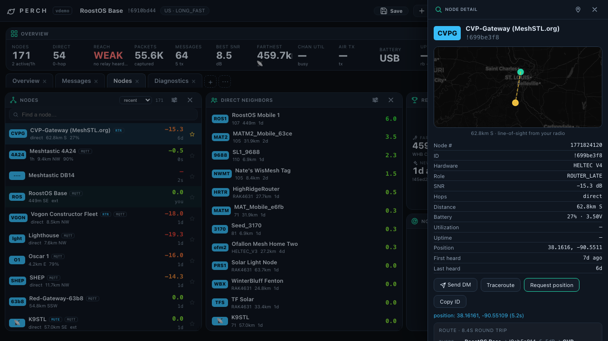
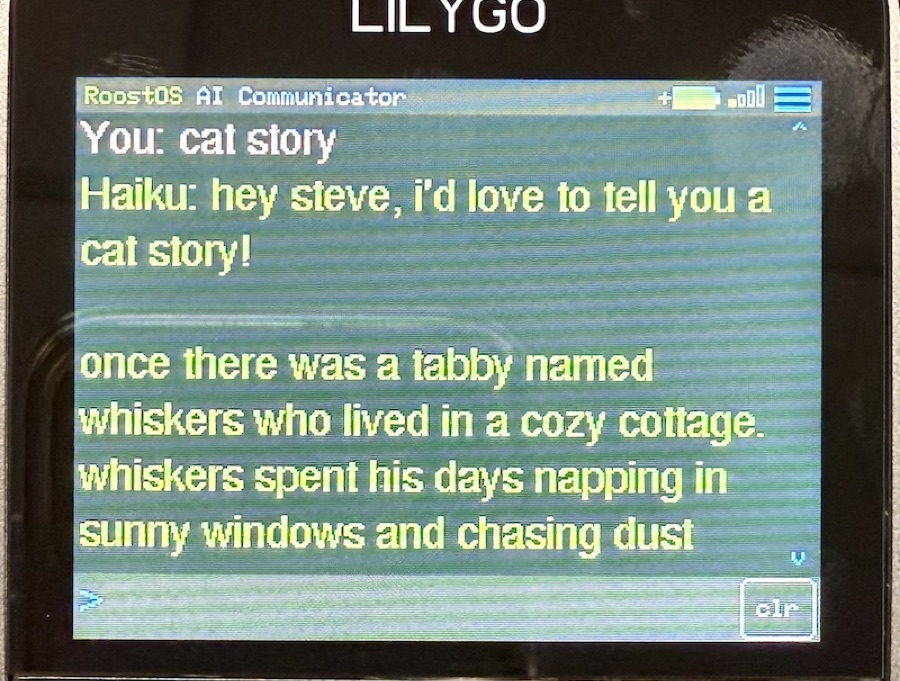
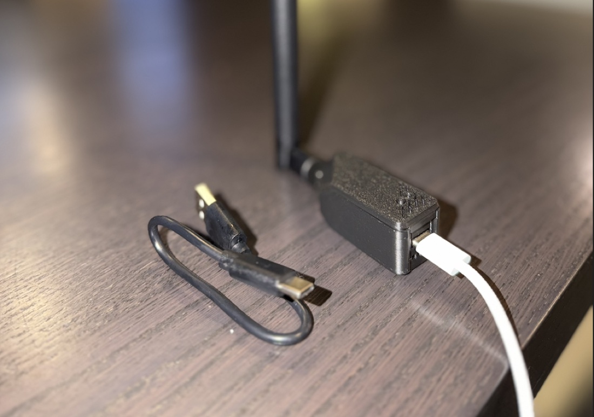
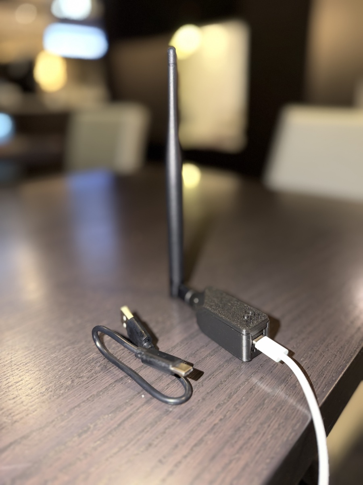
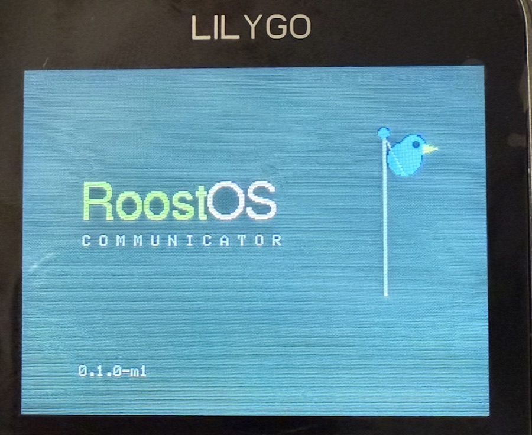

RoostOS turns small radios and dev boards into finished products: a command center for your Meshtastic mesh, a pocket AI communicator, a self-hosted server. Flash it, plug it in, use it — everything runs on your desk, not someone else's cloud.
macOS app today · single Go binary on Linux & Windows · full Perch & Coop story at perchmesh.dev
Every RoostOS project ships as a finished thing — flash it or double-click it and you're running. No dashboards to assemble, no YAML, no accounts.

LIVE DEMOA command center for your Meshtastic mesh. Chat with tapbacks, a live map with shared waypoints, deep node intel, traceroute with per-hop signal strength, position requests, and a capture database you keep. Plug in a $40 radio and see your whole city's mesh.
The daemon behind Perch. Owns the radio over USB, WiFi, or BLE; decodes and decrypts mesh traffic; answers a clean REST + SSE API; and captures everything to a SQLite file in your Documents folder — history that survives restarts and belongs to you.

A pocket device with a keyboard that talks to Claude or Gemini over WiFi — chat, directions, abilities, and a real boot splash, all on a $60 LILYGO T-Deck. Flash it in the browser, add an API key, and it's yours.

An appliance-in-a-box home server: web console, AI integrations, and the plumbing already done. The original Roost — where the nest started.
Your radio, your capture database, your API keys. Everything runs locally; nothing phones home. Communicator and Roost Server are fully open source.
Signed macOS app, browser flasher, single binaries. The soldering, packaging, and "why won't it boot" are already done.
Perch and Coop speak Meshtastic — LoRa mesh that works when cell service doesn't. Tested daily on the MeshSTL community mesh in St. Louis.

The $40 radio Perch was built around — LoRa, WiFi, 3D-printed case included.
GigaParts →
Keyboard, touchscreen, LoRa, and GPS — runs the Communicator (or Meshtastic).
Micro Center →